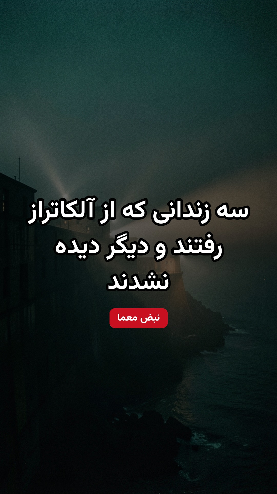
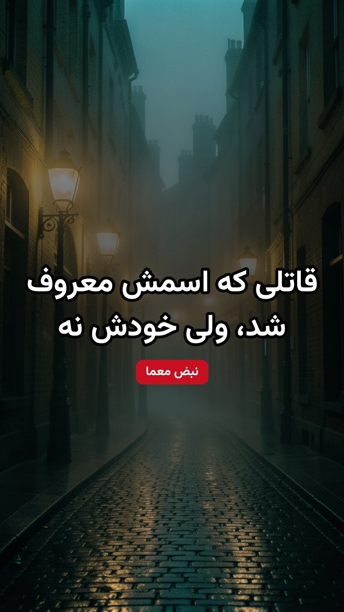
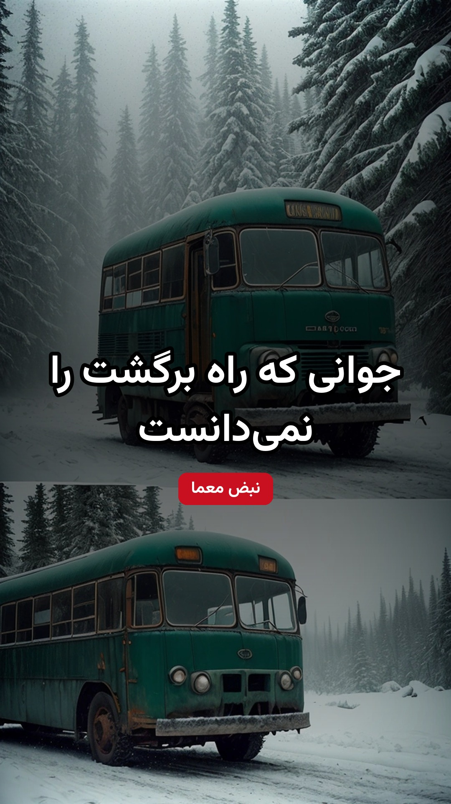
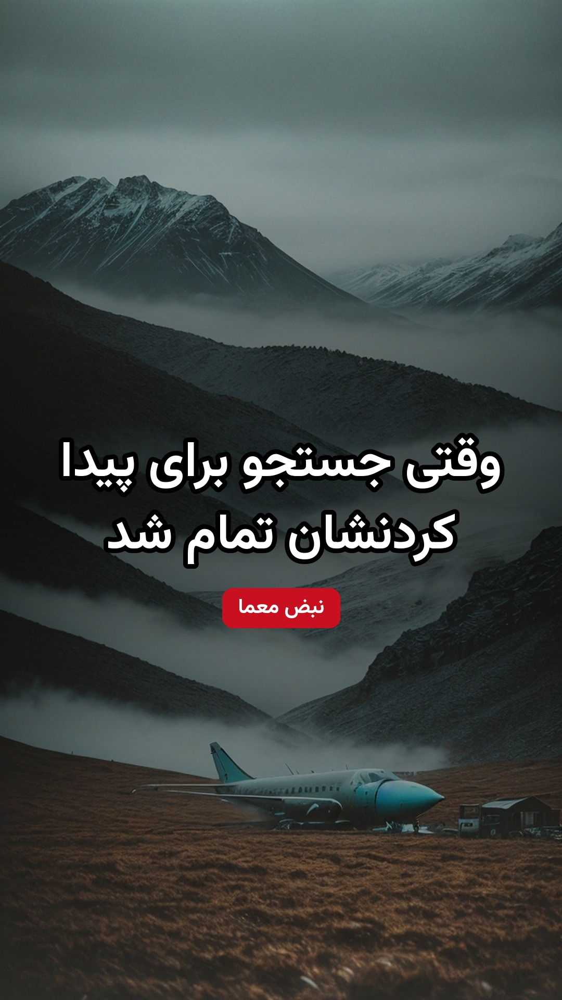
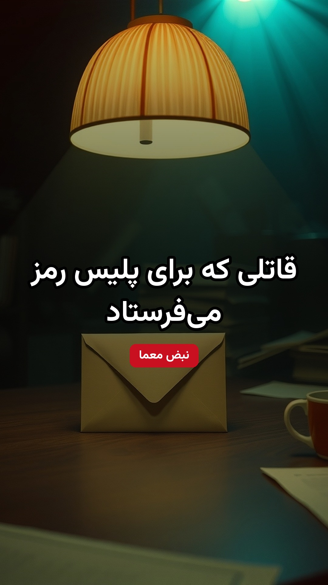
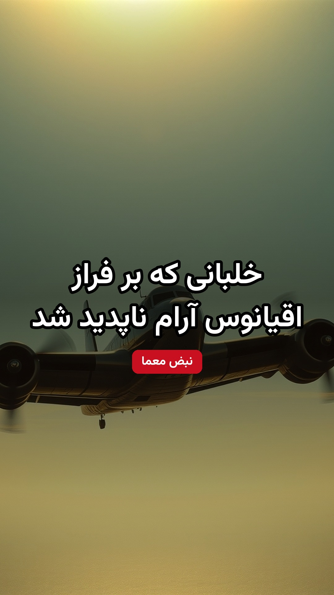
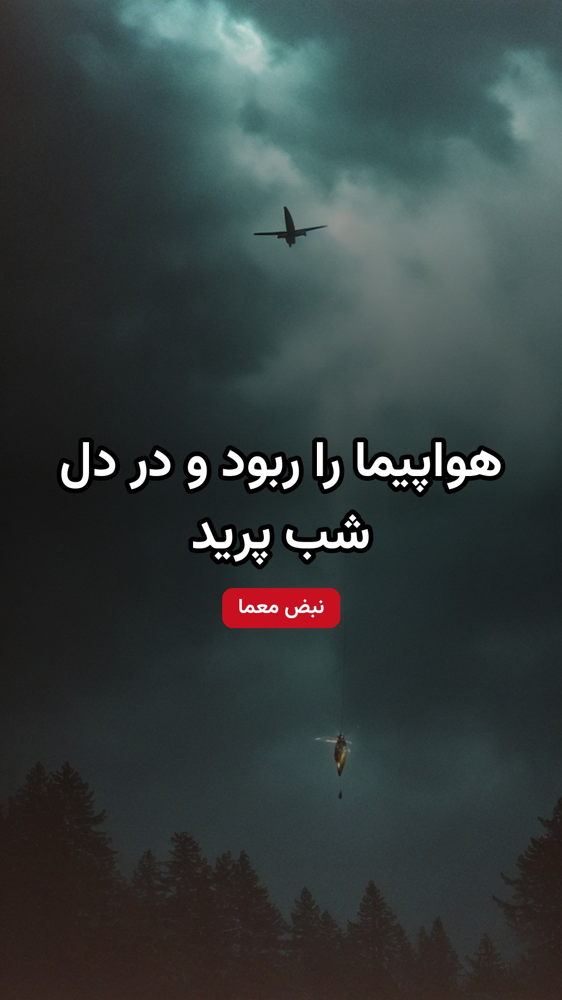
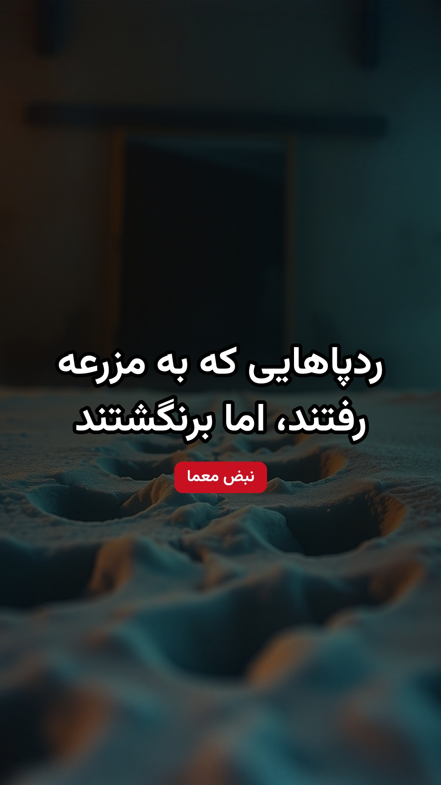
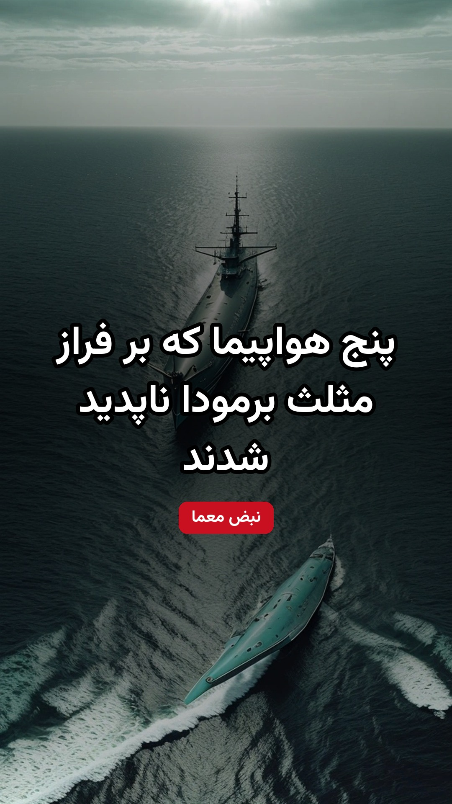

ماجرای واقعیجدید📍 ریلز: سه زندانی که از آلکاتراز رفتند و دیگر دیده نشدند
🎬 فرار از آلکاتراز
Escape from Alcatraz · 1979
🎥 کارگردان: دان سیگل
جدیدترین ریلز همیشه اول صفحهست 👇

ماجرای واقعیجدید📍 ریلز: سه زندانی که از آلکاتراز رفتند و دیگر دیده نشدند
🎬 فرار از آلکاتراز
Escape from Alcatraz · 1979
🎥 کارگردان: دان سیگل

ماجرای واقعیجدید📍 ریلز: قاتلی که اسمش معروف شد، ولی خودش نه
🎬 از جهنم
From Hell · 2001
🎥 کارگردان: برادران هیوز

ماجرای واقعیجدید📍 ریلز: جوانی که راه برگشت را نمیدانست
🎬 به سوی طبیعت وحشی
Into the Wild · 2007
🎥 کارگردان: شان پن

ماجرای واقعیجدید📍 ریلز: وقتی جستجو برای پیدا کردنشان تمام شد
🎬 جامعهی برف
Society of the Snow · 2023
🎥 کارگردان: خوان آنتونیو بایونا

ماجرای واقعیجدید📍 ریلز: قاتلی که برای پلیس رمز میفرستاد
🎬 زودیاک
Zodiac · 2007
🎥 کارگردان: دیوید فینچر

ماجرای واقعیجدید📍 ریلز: خلبانی که بر فراز اقیانوس آرام ناپدید شد
🎬 آملیا
Amelia · 2009
🎥 کارگردان: میرا نایر

ماجرای واقعیجدید📍 ریلز: هواپیما را ربود و در دل شب پرید
🎬 تعقیب دیبی کوپر
The Pursuit of D.B. Cooper · 1981
🎥 کارگردان: راجر اسپاتیسوود

ماجرای واقعیجدید📍 ریلز: ردپاهایی که به مزرعه رفتند، اما برنگشتند
🎬 مزرعهی قتل
The Murder Farm (Tannöd) · 2009
🎥 کارگردان: بتینا اوبرلی
💡 فیلم آلمانی، بر اساس رمانی که از این پرونده الهام گرفته؛ با اسم The Murder Farm جستوجو کن

ماجرای واقعیجدید📍 ریلز: پنج هواپیما که بر فراز مثلث برمودا ناپدید شدند
🎬 برخورد نزدیک از نوع سوم
Close Encounters of the Third Kind · 1977
🎥 کارگردان: استیون اسپیلبرگ
💡 هواپیماهای گمشدهی پرواز ۱۹ در صحنهی اول فیلم پیدا میشوند
🎞 بهزودی اولین فیلم اینجاست...